Your lectures, turned into notes.
Record a lecture. Egghead Notes writes down every word on your own computer, then writes the notes for you: formulas worked through, graphs you can move, diagrams you can click, right next to your Canvas due dates.
Free and open source. One download for each computer, whether it records, keeps the library, or both. Release notes and every file on GitHub.
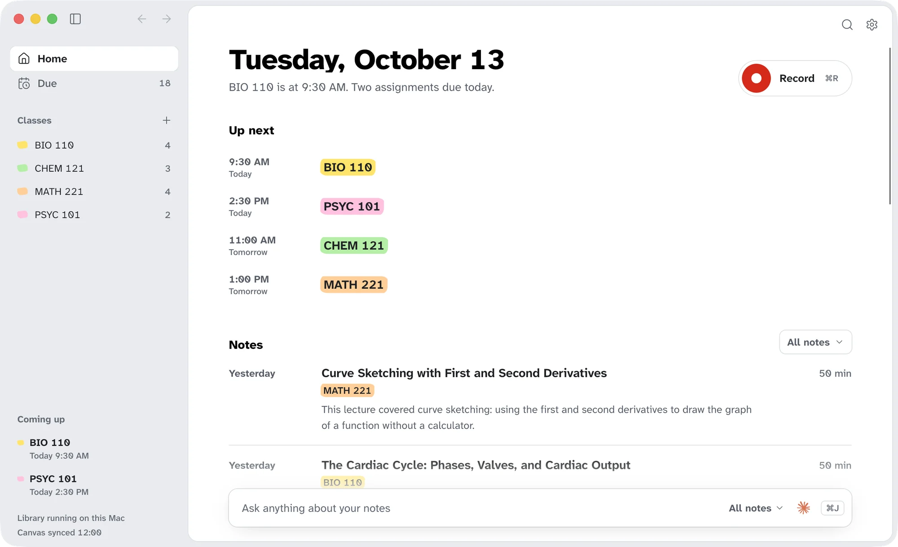
Record
Every word, written down live.
Click Record on Home, in the menu bar or the tray, or press ⌥⇧R (Ctrl+Alt+R on Windows). Egghead Notes writes the lecture down as it's said, on your own computer. The audio never leaves it.
- Type your own notes while it records; the write-up is built round them
- Pause or stop from the menu bar
- Or have it written down after class, to save battery
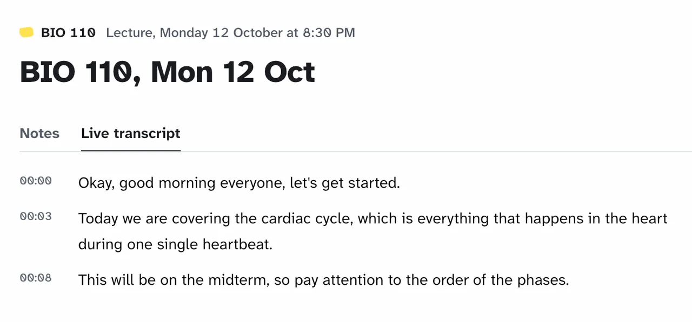
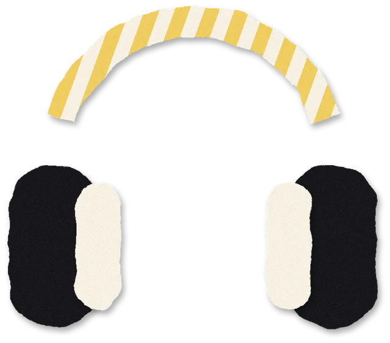
Notes
Written for you after class.
When you stop, the lecture is filed under its class and written up: a summary, key points, definitions and questions to review, by the AI you choose.
- Filed under the right class, worked out from what was said
- Fix or add to the notes yourself whenever you like
- Plain Markdown files on your computer, one folder per class
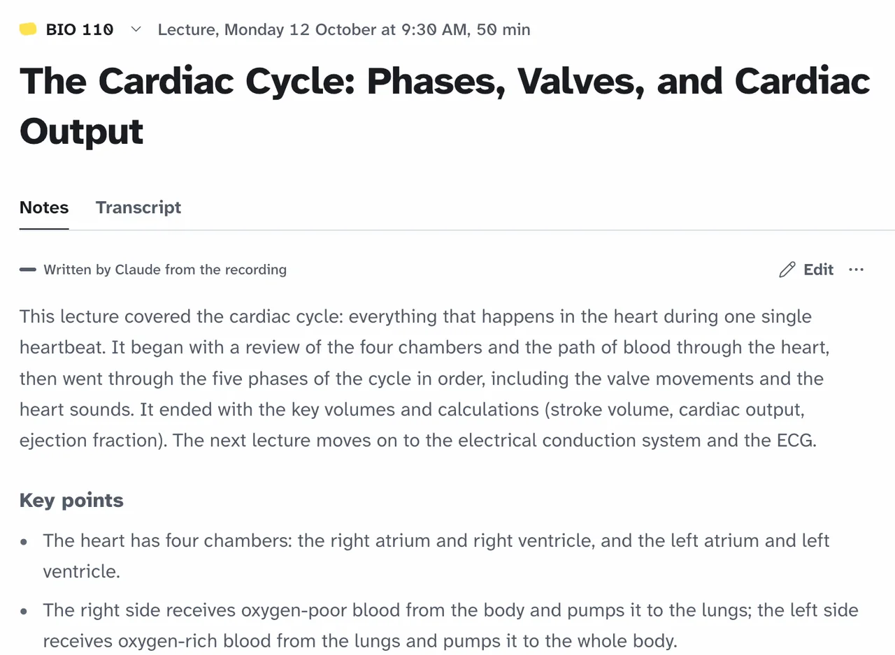
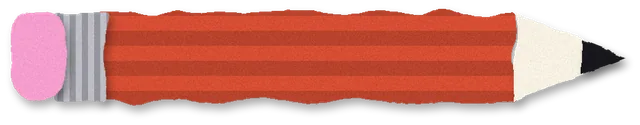
Formulas
Every formula, worked through.
Maths is written the way it was on the board, in proper notation, with each step of a worked example in the order it was done.
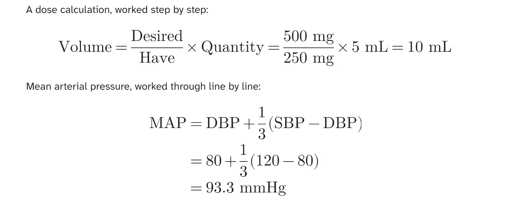
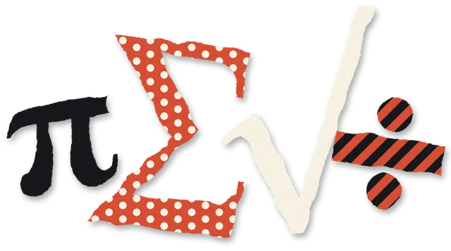
Graphs
Drag a slider, watch it change.
When a lecture is about a curve, the notes draw it from its formula. Move a slider, or press play, and see what each number does.
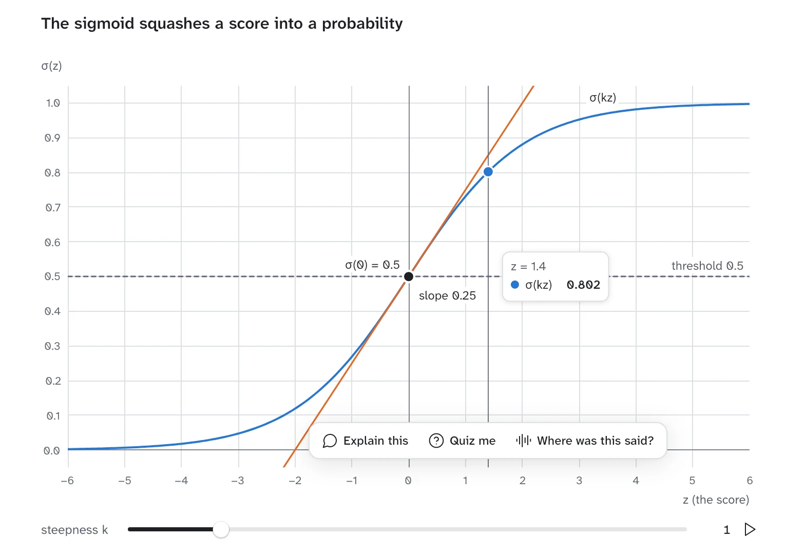
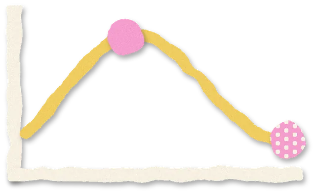
Diagrams
Click a step to follow it.
A process becomes a diagram you can click through, and anatomy becomes a labelled drawing, made from what your lecturer said.
- Click a box to follow its arrows
- Ask about any part: Explain this, Quiz me, or Where was this said?
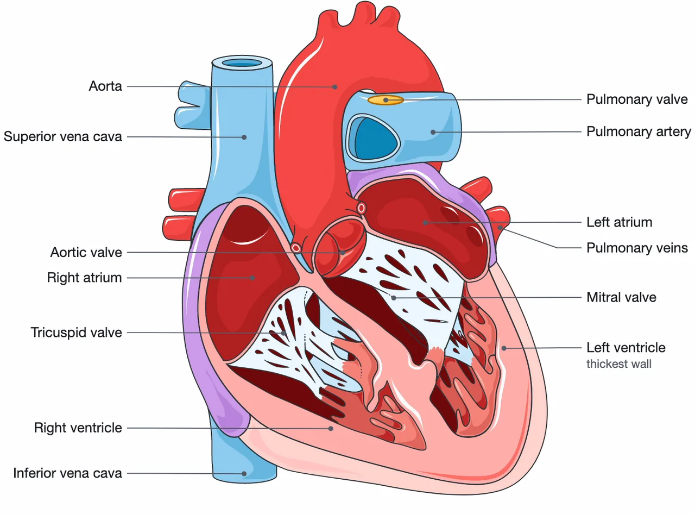
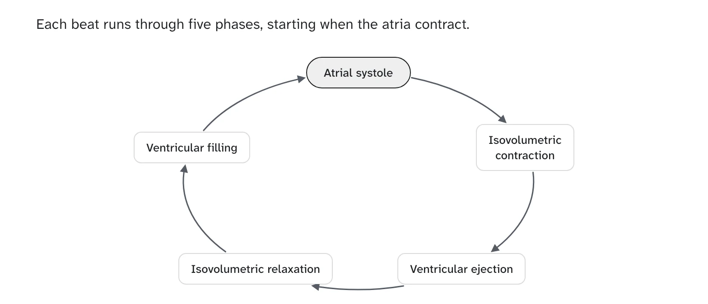
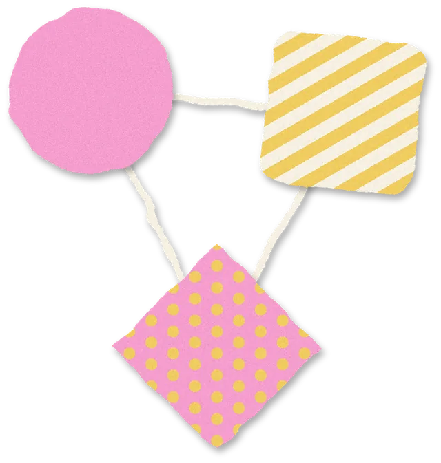
Due dates
Pulled in from Canvas for you.
Egghead Notes reads Canvas through your browser with your own sign-in, so there's no password or token to hand over, and it only reads. Nothing on Canvas changes.
- Everything due across your classes, as a calendar
- Each assignment's instructions and rubric, your submissions and feedback
- Works in Chrome and the browsers built on it, such as Edge and Brave
- And in Firefox 140 or later and the browsers built on it, such as Zen, with the add-on from Mozilla's site
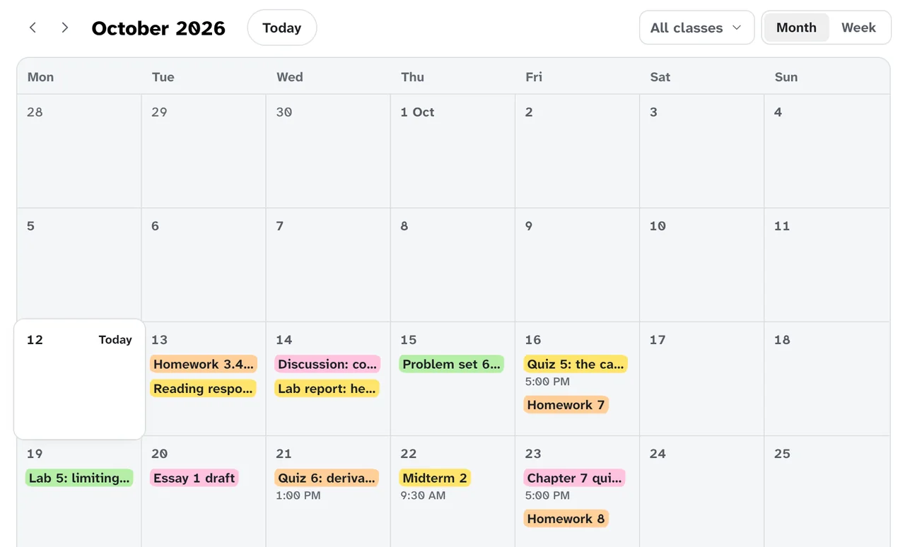
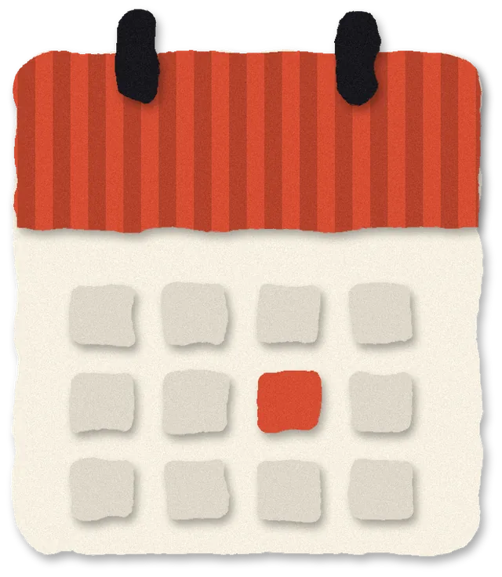
Ask
Answers from your own lectures.
Ask about one lecture, a class, or all of them. The answer comes from your own notes, with the lecture and the minute it was said.
- An Ask bar on Home, on every class and under every lecture's notes
- The quick panel from anywhere: ⌥Space on a Mac, Alt+Shift+Space on Windows
- Answers appear as they're written
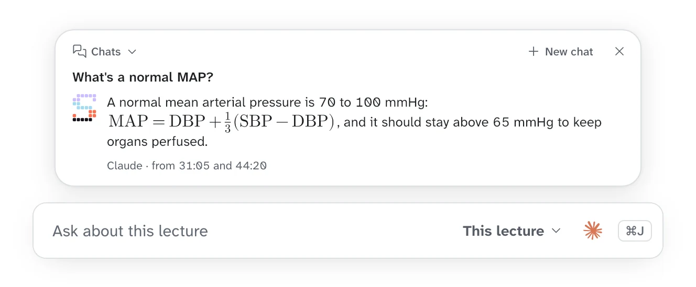
Connect
Works with Claude and ChatGPT.
Turn it on in Settings, and the Claude and ChatGPT apps on your computer can read your lectures and notes to answer your questions. They can't change or delete anything.
- One Connect button for each app, nothing to type or paste
- You choose what they can read: lectures, notes, Canvas
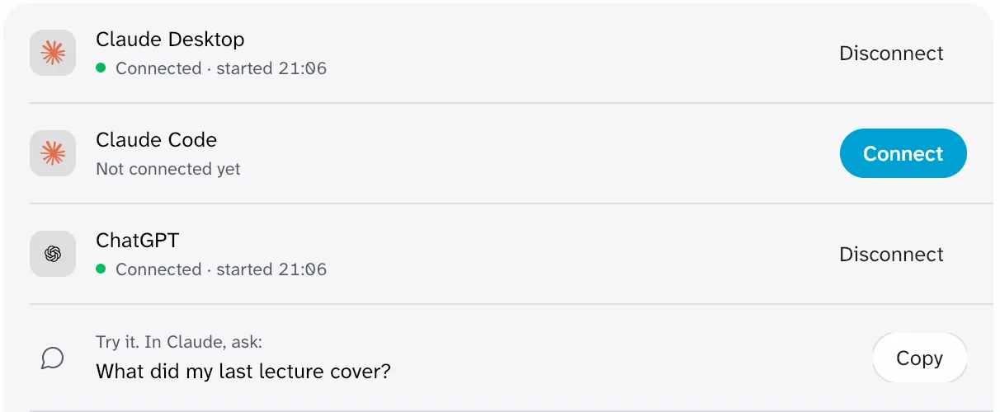
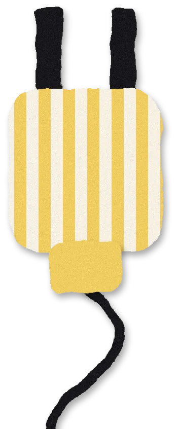
One computer, or two.
Start on one computer. Later, record on a laptop too with Settings → Your library → Add a laptop, or move your library to a computer at home in Settings → Connection, with nothing to reinstall.
Just this computer
Your laptop records, keeps the library and writes the notes itself. Nothing else to set up; notes are written while it's on.
A laptop and a library
A computer that stays on at home (a Mac mini, an old laptop, any Mac or PC) keeps the library, writes the notes and syncs Canvas, even while your laptop sleeps. Your laptop reaches it at home or, anywhere, over Tailscale.
Your recordings never leave your computers.
- Your audio never leaves.It's transcribed on the computer that recorded it.
- No account, no server.There's no Egghead Notes cloud. Your library is a folder on a computer you own, and your notes are Markdown files you can open, back up or sync however you like.
- No tracking.The app doesn't track you or report on what you do. Once a day it sends one anonymous count (a random code for this copy, the app's version, and Mac or Windows) so we know how many people use it. You can turn it off in Settings. Nobody at Egghead Notes can see your lectures.
- You choose the AI.Ollama keeps everything on your computer. Claude Code, Codex or Gemini use the plan you already have, and only when you pick them.
- Canvas and calendars are read-only.Egghead Notes reads with your own sign-in and changes nothing. What it reads goes only to your library.
- Open source.Every line is on GitHub, so you don't have to take our word for any of this.
The details are in the privacy policy.
Your library in your pocket.
Read your notes, ask a question and see what's due from your iPhone, iPad or Android phone. There's no app store involved: it's a web app your own library serves.
Free, for Mac and Windows.
The same app for every computer. Setup asks how you'll use it: just this computer, your library, or your laptop. It comes in light and dark and twenty colour themes, and keeps itself up to date, never while it's recording.
Mac
This computerNeeds macOS 15 or later. Open the DMG and drag Egghead Notes into Applications. It's signed and notarized by Apple, so it opens like any app from the internet. Allow the microphone when it asks.
Download Egghead-Notes.dmgWindows
This computerRun the Setup.exe. It installs for your account only, with no admin rights needed. If Windows says "Windows protected your PC", click More info, then Run anyway.
Download Egghead-Notes-Setup.exeEvery update is checked against the release's SHA256SUMS.txt before it installs.
Prefer a terminal? The install commands are in the README.
Record only where you're allowed to: many schools and places need everyone's consent.
Egghead Notes is free. If it helps you, buy us a coffee.